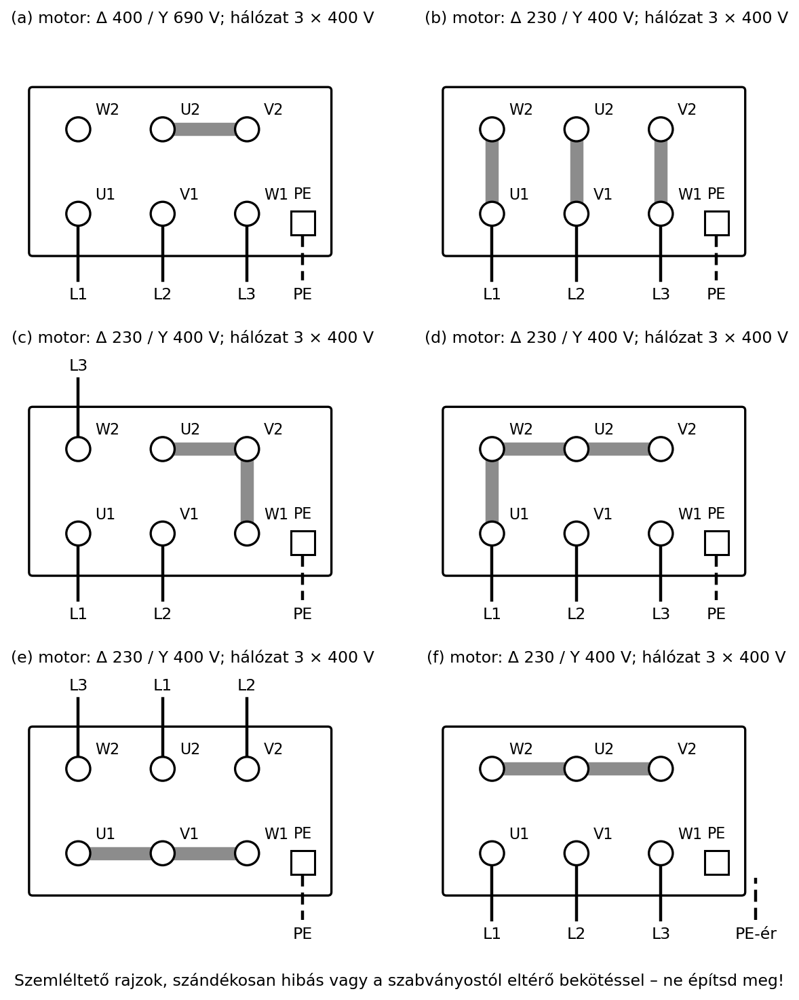

A kapcsolódó elmélet: tankönyv, 26.3 alfejezet.
Biztonsági korlát. A feladat tanműhelyi (törpefeszültségű) környezetre vagy jogosult oktató felügyeletére vonatkozik; hálózati feszültségen önállóan ne végezd. Hálózati feszültségű munkát csak jogosult, arra képesített személy végezhet, a hatályos előírások szerint.
Cél. Háromfázisú aszinkron motor bekötése a hálózati feszültséghez illesztett csillag- vagy deltakapcsolásban, a forgásirány ellenőrzése.
Eszközök, anyagok: motor (ismert adattáblával), kapocshidak, csavarhúzó, villáskulcs, kétpólusú feszültségvizsgáló (MSZ EN 61243-3), multiméter, szigetelési ellenállás-mérő, fázissorrend-mérő (opcionális), védőkesztyű, védőszemüveg, feszültségmentesítő eszközök, jegyzőkönyv.
Lépések:
A 7. és 8. lépés eredményét – a kész bekötést a nyitott kapocsdobozban – a következő ábra mutatja mindkét kapcsolásra. A négyeres tápkábel a tömszelencén át lép be, a köpeny a tömszelencében marad; az L1 (barna) az U1, az L2 (fekete) a V1, az L3 (szürke) a W1 kapocsra, a zöld-sárga PE a doboz PE-csavarjára kerül. Az (a) részen a csillaghíd a felső W2–U2–V2 sort köti össze, a (b) részen a három deltahíd az U1–W2, V1–U2, W1–V2 kapcsokat. A szaggatott vonal a fedéltömítés helye.
Figyeld meg, hogy a tápvezetékek mindkét esetben ugyanazokra a kapcsokra kerülnek, csak a hidak változnak. A kapcsoló anyákat a gyártó által megadott nyomatékkal húzd meg, az ereket érvéghüvellyel vagy kábelsaruval csatlakoztasd, és a fedél visszahelyezésekor ellenőrizd a tömítést. A HTML-kiadásban a csillag és a delta nézet között válthatsz, a részek rámutatásra magyarázatot kapnak.
Ellenőrzési pontok: - A szigetelési ellenállás minden körben a határérték felett van. - A tekercsellenállások közel azonosak. - A hidak pontosan a kiválasztott kapcsolásnak felelnek meg. - A tápvezetékek a U1, V1, W1 kapcsokra csatlakoznak. - A védővezető csatlakoztatva van. - A forgásirány a berendezés követelményének megfelelő. - A kapocsdoboz fedele vissza van helyezve, a tömítések sértetlenek.
Tünet. Egy új, 1,5 kW-os motort a szerelő bekötött, de a motor hangos, erősen melegszik, és a motorvédő kapcsoló néhány másodperc után leold. A tengely alig forog, vagy nem indul el.
Hipotézis. A motor adattáblája 230/400 V Δ/Y, a hálózat 400 V. A szerelő valószínűleg deltába kötötte a motort, mert a kapocsdobozban a gyári híd gyárilag delta állásban volt, és nem ellenőrizte az adattáblát.
Mérés. Feszültségmentesítés után a kapocsdobozban a hidak delta bekötést mutatnak (U1–W2, V1–U2, W1–V2). A motor adattáblája: Δ 230 V / Y 400 V. A számított tekercsfeszültség delta bekötésben 400 V, ami a 230 V-os tekercsre túl nagy.
Ok. A motor tekercsére a névleges 230 V helyett 400 V jut, ezért a tekercs erős telítésbe kerül, a felvett áram megnő, a motor túlmelegszik és a túláramvédelem leold.
Javítás. Feszültségmentes állapotban a hidakat csillag kapcsolásra kell átrendezni (U2–V2–W2 közösítése), majd a tápvezetékeket visszakötni a U1, V1, W1 kapcsokra. Ezután a motor normál áramfelvétellel, a névleges fordulatszám közelében fog járni.
Megelőzés. Mindig az adattábla alapján, a hálózati feszültséggel összevetve válasszuk ki a kapcsolást. A bekötés után rövid próbaindítással ellenőrizzük az áramfelvételt (pl. lakatfogóval), és hasonlítsuk össze az adattáblán szereplő névleges árammal.
1. feladat (A). Definiáld a kapocsdoboz szerepét, és sorold fel a hat kapocs jelölését a mai szabvány szerint.
2. feladat (A). Egy háromfázisú hálózat vonali feszültsége 400 V. Mekkora a csillagkapcsolású motor tekercsfeszültsége? Számítsd ki.
3. feladat (B). Adott egy motor, adattáblája: 230/400 V Δ/Y, névleges áram 3,4 A. A rendelkezésre álló hálózat 400 V. Milyen kötést választanál? Rajzold fel a kapocsdoboz bekötését (csillag vagy delta), és jelöld a tápvezetékek csatlakozási pontjait.
4. feladat (B). A motort csillagba kötötted, de a forgásirány ellentétes a kívánttal. Írd le lépésről lépésre, mit teszel, milyen biztonsági szabályok betartásával.
5. feladat (C). Egy motor kapocsdobozában a következő hidak vannak: U1–W2, V1–U2, W1–V2. A motor adattáblája: 400/690 V Δ/Y. A hálózat feszültsége 400 V. Helyes-e a bekötés? Indokold számítással. Ha nem, mit változtatnál?
6. feladat (D). Bekötés előtt szigetelési ellenállást mérsz. Az U1–test mérés 0,8 MΩ, a V1–test mérés 0,9 MΩ, a W1–test mérés 12 MΩ. A tekercsellenállások: U1-U2 = 4,2 Ω, V1-V2 = 4,1 Ω, W1-W2 = 4,15 Ω. A motor névleges feszültsége 400 V, a környezet tiszta. Mi a teendőd? Milyen hibára gyanakszol, és milyen további mérést végeznél?
7. feladat (C) – hibakereső rajzsor. Az ábra hat kapocstáblája 3 × 400 V-os hálózatra van bekötve. Mindegyiknél nevezd meg a hibát (ha van), a várható tünetet és a javítást. A rajzokat ne építsd meg.

Önellenőrzés – válaszok:
Feladatok megoldásai:
1. feladat. A kapocsdoboz a motor tekercs végeinek csatlakoztatására szolgáló sorkapocs-tér, ahol a tekercsek kapcsolása hidakkal állítható be. A kapocsjelölések: U1, V1, W1 (kezdetek) és U2, V2, W2 (végek).
2. feladat.
Adott:
.
Keresett:
csillagban.
Képlet:
.
Behelyettesítés:
.
Ellenőrzés: csillagban a fázisfeszültség mindig kisebb a vonalinál, ez
megfelel.
3. feladat. A motor 230/400 V Δ/Y jelölése: a tekercs 230 V-os. 400 V-os hálózaton csillagkapcsolást kell választani, mert . A kapocsdobozban U2–V2–W2 közösítendő, a táp L1→U1, L2→V1, L3→W1. A rajz megegyezik a fenti csillag kapcsolási rajzzal.
4. feladat. Feszültségmentesítés az öt biztonsági szabállyal (a feszültségmentesség ellenőrzésével együtt, a vezetékekhez nyúlás előtt). A motor forgásiránya ellentétes, ezért a betápláló vezetékek közül kettőt (például L1 és L2) a kapocsdobozban felcserélünk; a hidakhoz nem nyúlunk. Ellenőrizzük a kötések meghúzását, visszahelyezzük a fedelet, megszüntetjük a földelést/rövidzárat és a lezárást, majd rövid próbaindítással ellenőrizzük a forgásirányt. Dokumentáljuk a cserét.
5. feladat. A hidak delta kapcsolást mutatnak (U1–W2, V1–U2, W1–V2). Motor adattábla: 400/690 V Δ/Y, tehát a tekercs névleges feszültsége 400 V. Hálózat: 400 V. Deltakapcsolásban , ami pontosan a tekercs névleges feszültsége, tehát a bekötés helyes. Ha csillagba kötnénk, akkor , ami alacsony, a motor nyomatéka jelentősen csökkenne, és túlterhelhető lenne.
6. feladat. A szigetelési ellenállás U1 és V1 tekercs–test között 0,8–0,9 MΩ, ami a tananyagban használt 1 MΩ-os példahatár alatt van, ezért a motor ebben az állapotban nem helyezhető üzembe (a pontos határ a gyártói adat és a hatályos szabvány; ellenőrizendő); a W1–test 12 MΩ. A tekercsellenállások közel azonosak, tehát a tekercsek villamosan épek. A gyanú: a motor nedves vagy szennyezett, esetleg a szigetelés az U és V fázis környékén gyengült. Teendő: a motort ne kapcsold be; mérd meg a tekercsek közötti szigetelést is (U–V, V–W, W–U); vizsgáld meg a kapocsdobozt nedvességre, száríttasd ki a motort (pl. meleg levegővel), majd a névleges feszültséghez illő vizsgálófeszültséggel (a 400 V-os motornál 500 V DC) ismételd meg a mérést. Csak a határérték feletti szigetelési ellenállás esetén helyezhető üzembe. A pontos határértéket a gyártói adatlap és az aktuális szabvány adja meg. (ellenőrizendő: határérték)
7. feladat – megoldókulcs.
| Rajz | Hiba és tünet | Javítás |
|---|---|---|
| (a) | a csillaghíd csak U2–V2 között van, W2 szabad: a W tekercs nem kap áramot, az U és V tekercs sorban az L1–L2 feszültségen – egyfázisú üzem, a motor zúg, nem indul | ez a Δ 400 V-os motor 400 V-on delta: a három függőleges híd (csillag csak 690 V-on lenne helyes) |
| (b) | a 230 V-os tekercsre deltában 400 V jut: nagy áram, a motorvédő old, a tekercs túlmelegszik | csillaghíd (W2–U2–V2) |
| (c) | a W tekercs fordítva van bekötve (L3 a W2-n, a W1 a csillagponton): a három tekercs mezője nem szimmetrikus – nagy, egyenlőtlen fázisáramok, erős zúgás, gyenge nyomaték, melegedés | L3 a W1-re, híd W2–U2–V2 |
| (d) | a régi U1–W2 híd bent maradt: az L1 a csillagpontra kerül, az U tekercs két vége azonos potenciálon (kiesik), a V és W tekercsre a teljes 400 V jut – nagy, aszimmetrikus áram, a motorvédő old | minden fölösleges hidat le kell venni |
| (e) | nem hiba: mindhárom tekercs azonos módon fordított, a csillag villamosan helyes, a mező és a forgásirány sem változik, a motor jól jár; eltér viszont a szabványos bekötéstől | dokumentáld, vagy kösd át a szabványos elrendezésre |
| (f) | a PE nincs bekötve: a motor működik, de testzárlatnál a ház veszélyes feszültségre kerülhet – nem helyezhető üzembe | PE a PE-csavarra, a védővezető folytonosságának mérése |
Példa. Egy motor adattáblája: 230/400 V Δ/Y. Ez azt jelenti, hogy a tekercs 230 V-ra készült. Ha a hálózat vonali feszültsége , akkor csillagkapcsolásban , tehát a motor csillagban köthető. Ha valaki deltába kötné, akkor jutna a 230 V-os tekercsre, ami nagy áramot és gyors túlmelegedést okoz.
Számítás. Legyen a hálózat . Csillagkapcsolásban a tekercsfeszültség: Ez illik a 230 V-os tekercshez. Deltakapcsolásban , ami nem illik. Tehát a 230/400 V Δ/Y motort a 400 V-os hálózaton csillagba kell kötni.